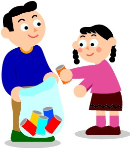

La crescente richiesta di metalli da parte dei Paesi industrializzati
sta causando l’esaurimento delle miniere. Da qui nasce l’esigenza del
riciclaggio dei metalli, anche di quelli non particolarmente pregiati.

Le lattine di alluminio sono il rifiuto più prezioso sul mercato del
recupero: esse sono interamente recuperabili e il loro riciclaggio
consente un risparmio del 95% dell’energia necessaria per produrle
partendo dalla materia prima. Per la loro fabbricazione sono comunemente
usati l’alluminio o la banda stagnata (conosciuta con il nome di latta),
un foglio di acciaio ricoperto su entrambe le facce di un sottile strato
di stagno.